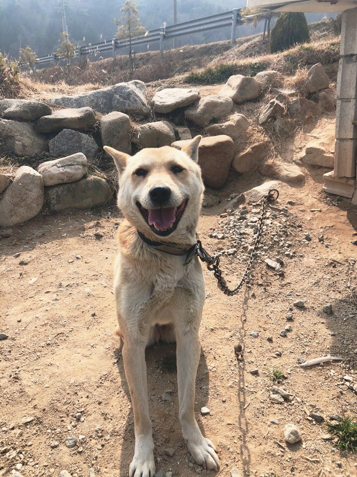

This is my first LIS 351 Website! Please enjoy my website!
To introduce myself, I live in South Korea. I can introduce many interesting things but I recommend you to visit this website.
I really like a dog, and currently have one!
Her name is Bockgil.
After getting a job, I want to have more dogs.
A list below shows the species of dogs that I really like and want to raise.
Among them, my favorite is a Golden Retriever. You can find more information on this website.
Due to COVID-19, I am currently taking courses outside the United States. Although the weather of my country is good, I really miss the views of Madison, Wisconsin.
So the images below are what I took when I was in Madison. Please figure it out where the places are.
| Answer Link | |
| Answer Link | |
| Answer Link |
| Answer Link |